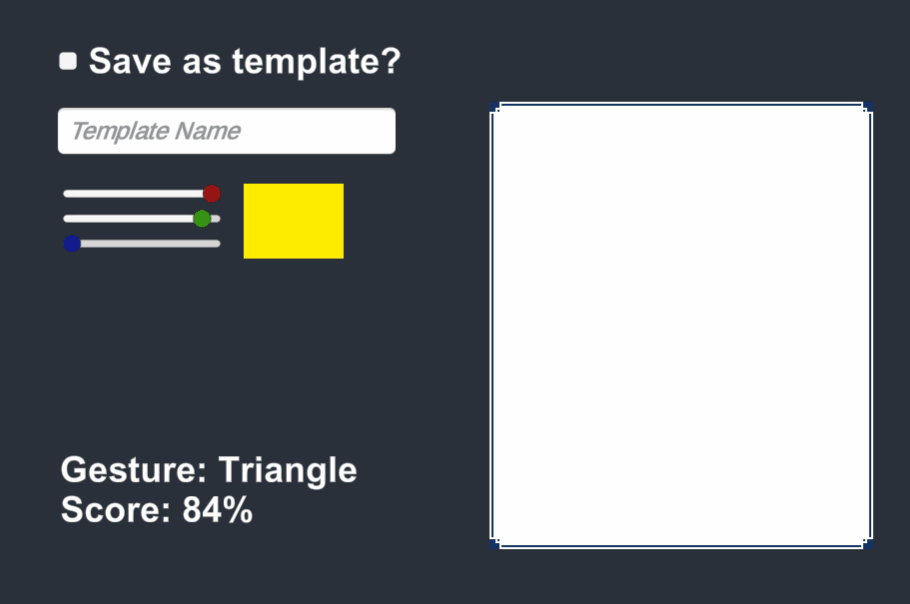

$1 Unistroke Recognizer
Source Code

General Information
Project Duration:
3 Days
8 hours per day
Engine: Unity
What is it?
This is a unistroke recogniser made in Unity based on this paper.
I used it during the creation of NDS as the basics of its main mechanic.

This is my one-dollar universal recognizer, developed in Unity for Hieda no Akyuu's Nocturnal Discordant Symposium (NDS). While working on NDS, I came across a research paper that laid the groundwork for the main mechanic we aimed to implement. This mechanic relied on users drawing patterns and recognizing them when they stopped drawing. To promote fast arcade gameplay, all inputs are singular strokes, so the user could draw multiple gestures in quick succession.
The recognizer class first normalizes the drawn pattern. This is achieved by resampling the list, ensuring points are evenly spaced. For instance, if you ask for 128 points, it guarantees an equal distribution along the drawn path.
Then, it normalizes rotation, allowing the recognizer to identify the pattern regardless of how or where it was drawn. This is accomplished by calculating centroids and determining the angle between the centroid and the initial point in the list.
The recognizer then scales the entire pattern, almost treating it like an image. It resizes it to a square,
maintaining a consistent size regardless of the original drawing's proportions. This square shape simplifies
recognition.
Finally, it translates the square pattern back to the origin, ensuring all patterns share the same reference
point. This enhances recognition accuracy and consistency.
The recognition process involves comparing two sets of values: the input points (from the user's drawing) and template points (representing known patterns). Both sets have been normalized. The system calculates the distance between corresponding points in these arrays and assigns scores. The template with the highest score is chosen, indicating the recognized pattern.
Once the template with the highest score is identified, its associated name can be used to trigger various actions or behaviours in the program. For instance, if the system recognizes a circle, it can execute the corresponding functionality specific to circles.
In addition to the recognition process, there's another intriguing aspect to how this system operates. It employs a box collider to accurately track the mouse's position. This position data is then translated into a hit point, which can be directly applied to the sprite itself. This unique approach involves manipulating pixels and the image itself to visualize the recognized patterns. It's a weird and unconventional way of doing it (as is the course for most things I wrote for this jam) but one I've grown to enjoy immensely.
I've gained a deeper understanding of sprites in Unity and how to manipulate them, and I've delved into the realm of saving and loading data within Unity. Most of my games before this did not involve data storage; this project introduced me to working with unity's resources folder and handling data interchangeably between JSON data and in-game functionality, which I found immensely valuable.